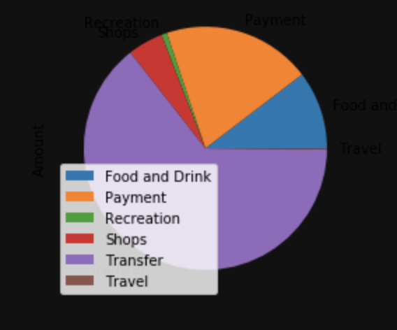
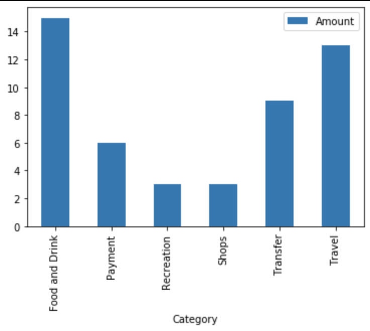
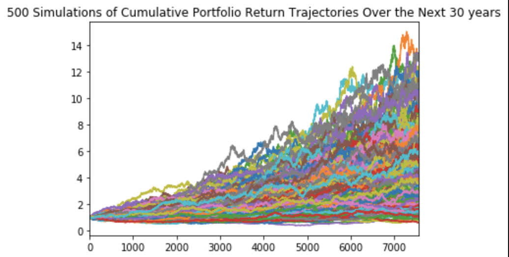
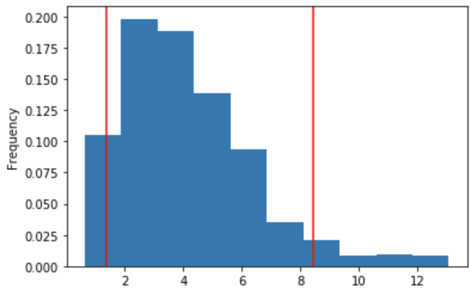
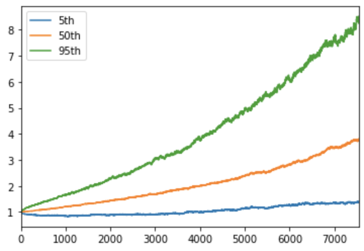

Investment Projection with Monte Carlo Simulation
Simulated long-term financial outcomes to support retirement planning using Monte Carlo techniques.
Summary
This project uses transaction data and simulated financial forecasts to assess retirement readiness. It leverages Plaid API for budget insights, IEX API for stock price history, and Monte Carlo simulations to evaluate portfolio performance across multiple scenarios.
1. Budget Analysis
Transaction data was pulled using the Plaid API and categorized into expense types. The summary below shows total amounts spent per category:
| Category | Amount ($) |
|---|---|
| Food and Drink | 3317.19 |
| Payment | 6310.50 |
| Recreation | 235.50 |
| Shops | 1500.00 |
| Transfer | 20537.34 |
| Travel | 41.52 |
The biggest expense was Transfer, the least was Travel.
 Monthly Summary
The following table summarizes expenses per month. Each month had identical totals.
| Month | Expenses ($) |
|---|---|
| July | 9135.51 |
| August | 9135.51 |
| September | 9135.51 |
2. Monte Carlo Simulation
Using historical stock data pulled via the IEX API, a Monte Carlo simulation was run to project returns for a portfolio over 20 and 30 years.
3. Retirement Plan Forecasting
The simulation results were used to forecast different return scenarios over a 30-year horizon.
- 10th percentile return: 1.64x
- 50th percentile return: 3.78x
- 90th percentile return: 6.89x
- Initial $20,000 investment:
- 10th percentile: $52,754.46
- 50th percentile: $95,531.40
- 90th percentile: $157,765.95
With a 4% withdrawal rate:
- Projected annual income: $1,913.69
- Projected annual needs: $6,085
A 50% increase in investment would raise projected income to $2,870.53
